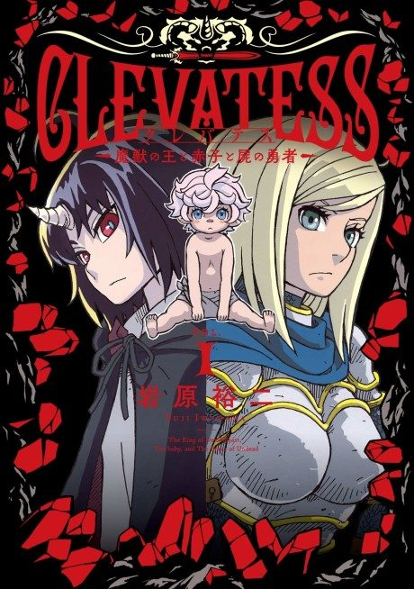

Anime
Anime
MangaClevatess
クレバテス-魔獣の王と赤子と屍の勇者-
The anime takes the story to Unclear.
7.7AniList
—Animeter
25 ep2 seasons
Anime finished. Where does the manga pick up?
StatusNo source yet
We looked for where the anime ends in the manga but found no source we trust yet. The manga is still running.